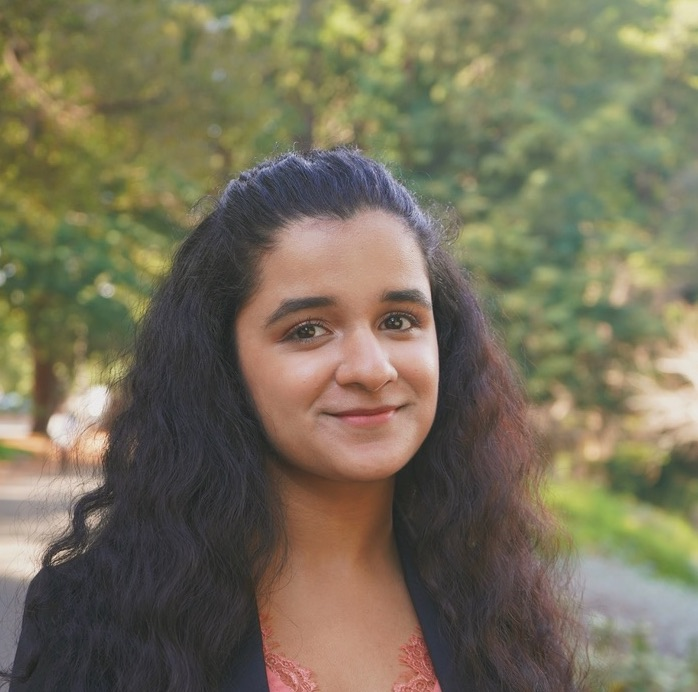

Home
Home
The Campus Climate (CC) Department is dedicated to achieving diversity, equity, and inclusion at UC Berkeley. Our goals are to create equitable hiring practices to increase diverse faculty and enhance mentorship programs to assist freshmen and transfers in their transition to college. We are also committed to ensuring the success of the African American Initiative and the Hispanic Serving Institution. Additionally, we strive to retain and ensure the success of the Black community at Cal and all marginalized groups on campus. Ultimately, our priority is to foster an environment where students feel appreciated and supported on campus.

Alexandra is a first-generation college student in her second year at UC Berkeley. She is currently majoring in Urban Studies and minoring in Global Poverty and Practice. Her dreams are to pursue a career in urban planning and work with marginalized countries to receive equity in resources and tools, specifically in the Global South. Her passions for urban planning stem from the love she has for her comunidad, Barrio Logan. She is the Campus Climate Administrator for ASUC Senator Chaka Tellem’s office. Through this, she aspires to amplify the voices of underrepresented students on campus and foster a community that is diverse, inclusive, and feels supported. In her free time she loves going to México (only a few mins away from her city), going to the beach, and enjoys reading and writing poetry.
Sydney Roberts is a freshman from Long Beach, California and intends to study Political Science and Public Policy. Sydney is passionate about empowering and advocating for marginalized groups, practicing environmentalism, and breaking the glass ceiling! Through working within the Campus Climate department, she hopes to create a more inclusive community at Cal for bipoc, lgbtq+ and disabled students. In her free time, she loves going to the beach and laughing with friends.
Isha Shah is the Pre-Med Academic and Professional Opportunities Administrator for the ASUC Office of Chaka Tellem. She is a junior majoring in Bioengineering, with a minor in Public Policy and Design Innovation, and is originally from Toronto, Canada. Isha’s passion to provide equitable education stems from her involvement as a Special Needs Education Tutor and Youth Empowerment Activist in highschool. After graduation, she wants to pursue medicine, while integrating healthcare and technology to provide accessible patient care to low income and underserved populations. Within the Berkeley Community, she is also a Campus Ambassador, Undergraduate Researcher at UCSF Medicine and part of the Society of Women Engineers.
Jacob Williams is a first-year studying MCB Neurobiology and Cognitive Science, currently serving as the Pre-Med Academic and Professional Opportunities Administrator for the ASUC Office of Chaka Tellem. As a Bay Area native, Jacob attended Oakland School for the Arts before becoming a Shelby Davis Scholar and representing the United States at the United World College in Mostar, Bosnia and Herzegovina where he completed the IB Diploma before coming to Cal. Abroad, Jacob found his passion for public justice while volunteering in a post-war conflict zone as well as an underlying theme of academic study in STEM which aided his ability to positively impact lives within the local community and the Balkan region. At Cal, Jacob hopes to bring his passion for STEM to his studies in Pre-Med and eventually pursue Medical School. In his free time, he likes to travel, dance, have deep-conversations about the randomest topics, and explore the unknown.
[INCORRECT]Cyn Gomez is a Legislative Associate for the ASUC Office of Chaka Tellem. They are a freshman currently intending to major in Social Welfare with a double minor in Public Policy and Spanish. Their goal is to create systematic change that uplifts underrepresented communities and fights alongside others for representation. After undergrad, Cyn wants to attend law school and practice civil rights law to protect and advocate for those who have been wronged by a system that should be built to protect everyone. They love to read, take naps, and embroider in their freetime, among going for runs and working out to destress. In their free time, you can catch Cyn planning for their next week or studying for any and every class![INCORRECT]
Katarina Stankovic is the Pre-Law Academic and Professional Opportunities Administrator for ASUC Senator Chaka Tellem’s office. She is a sophomore studying Political Science from Los Angeles, California. Katarina is passionate about helping underserved communities by uplifting their voices in any way possible. She has always been a community advocate and continues to prioritize social justice going towards the future. In her free time, she likes to ski, explore hiking trails, scuba dive, write, and practice various languages. She is someone who enjoys meeting new people and willing to learn unique things from others.